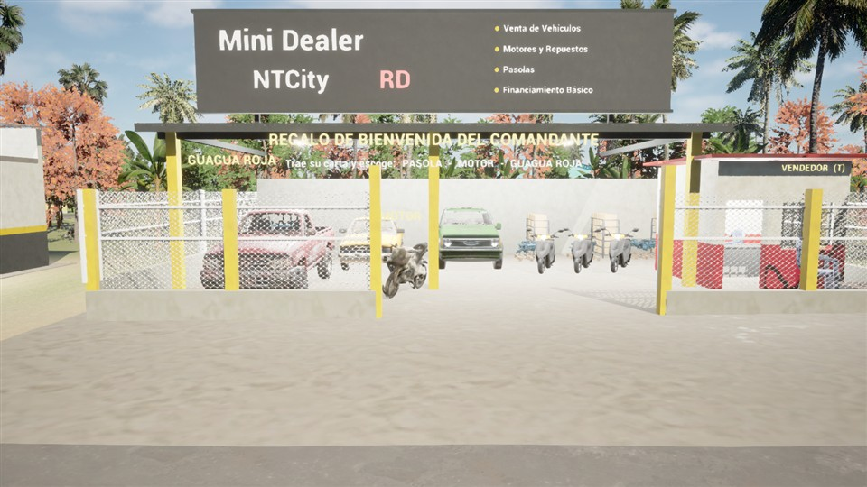

NT Juegos: juegos hechos en República Dominicana 🇩🇴
Descarga la tienda NT Juegos una sola vez y desde ahí instalas y actualizas todos nuestros juegos.
Descargar NT Juegos para Android
Gratis · Sin anuncios · Android 7 o más nuevo · ¿Cómo se instala?
📱 ¿Tienes iPhone? No hay que instalar nada: baja a Nuestros juegos y toca «Jugar en el navegador».
Nuestros juegos

Dale Concho RD
El juego del motoconcho dominicano. Manejas tu moto por pueblos, avenidas y caminos de tierra; la gente te vocea «¡Motoconcho!», los llevas a donde van y cobras tu pasaje.

NT City RD
Mundo abierto dominicano: empieza en Villa Bisonó (Navarrete) y va creciendo por toda la República Dominicana. Pasola, misiones, barrios reales y mucho más.
Próximamente
¿Qué es NT Juegos?
NT Juegos (también lo encuentras como NTJuegos, NT Juegas o NT Juega) es la tienda gratis de juegos dominicanos de RDAYNT Games, los creadores de NT City RD y Dale Concho RD. Con la app de NT Juegos para Android bajas e instalas nuestros juegos con un toque, y te avisa cuando hay una versión nueva. Si tienes iPhone, juegas directo en el navegador, sin instalar nada.
Para encontrarnos: busca «NT Juegos» en Google o entra directo a ntjuegas.github.io